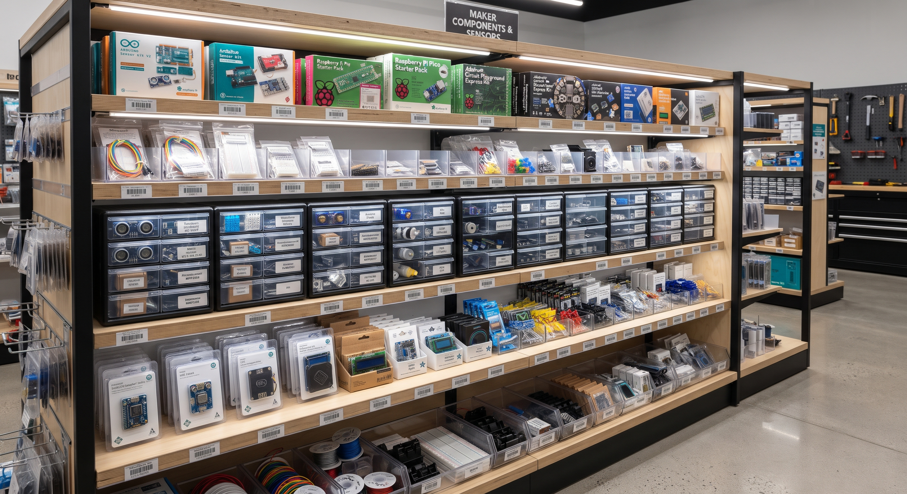

Welcome to Our Store
Your go-to place in Addis Ababa for quality electronics, computer components, and the latest tech gadgets. Whether you're a hobbyist exploring new ideas or a professional engineer working on advanced projects, we’re here to provide the reliable tools and components you need to bring your ideas to life.
Whether you are a university student building your first embedded microcontroller system or an IT professional setting up a multi-router network lab, we stock the equipment you need to succeed.

Why Choose Our Store?
We pride ourselves on community trust, technical competence, and verified part authenticity:
- Warranty-Backed Parts: All laptops and major hardware come with local store warranties.
- Affordable Pricing: Competitive pricing structured specifically to support student projects and tech startups.
- Technical Guidance: Our staff understands software engineering, circuits, and hardware architecture to assist with your inquiries.